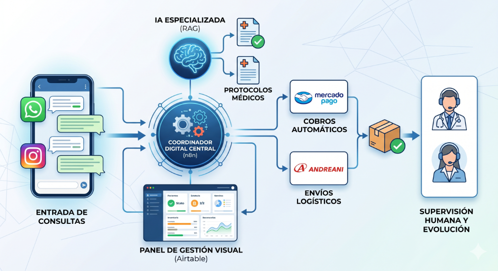

Glosario Técnico y DevOps Moderno
De la gestión tradicional de TI (Waterfall, Monolitos) a la entrega ágil elástica y flujos de Inteligencia Artificial.
Este documento está estructurado lógicamente para cerrar la brecha conceptual de forma progresiva. Fijate en cualquier sección para comenzar tu repaso estratégico.
El dominio de este vocabulario no busca transformarte en programador, sino darte el criterio de negocio necesario para negociar estimaciones técnicas, anticipar riesgos de delivery ágil y liderar la integración de soluciones modernas de software e IA.
La transición desde la programación determinista basada en reglas explícitas hacia flujos probabilísticos asistidos por modelos masivos de lenguaje natural.
Definición: Sistemas de software tradicionales donde cada paso, respuesta y ramificación de código está explícitamente programada por humanos mediante reglas rígidas.
Ideal para procesos de negocio rígidos (ej. facturación). En tu backlog, estos requerimientos se validan de forma binaria ("funciona" o "no funciona"). No toleran variaciones en los inputs.
Definición: Sistemas modernos que utilizan modelos estadísticos y de lenguaje para predecir cuál es la respuesta o acción más probable ante un conjunto de datos o instrucciones en lenguaje natural.
Como PM, acá tu rol cambia: en lugar de esperar que el sistema ande siempre igual (sí/no), tenés que gestionar márgenes de error aceptables, medir la precisión del modelo y controlar que la IA no invente datos (alucinaciones).
Definición: El consumo de un modelo de lenguaje maduro y gigante (como GPT-4, Claude o Gemini) de forma externa, pagando por su uso a través de APIs de red en lugar de entrenarlo localmente.
Acelera el "Time-to-Market" a días. Tu foco como PM debe estar en el control de costos (gestión de tokens) y el monitoreo de la latencia (tiempo que tarda la API del tercero en responder).
Definición: Motores de bases de datos especializados en almacenar información convertida en coordenadas matemáticas (vectores). Permiten búsquedas por "similitud de significado" (semántica) en lugar de palabras clave exactas.
Es la base para implementar **RAG** (Retrieval-Augmented Generation). Permite conectar los modelos de IA generales con los documentos confidenciales e históricos de tu corporación sin exponer datos de forma pública.
Definición: Sistemas donde la IA no solo responde preguntas, sino que tiene autonomía para planificar pasos, usar herramientas externas (como consultar bases de datos) y validar sus propios resultados para cumplir objetivos complejos.
Es lo último que se está usando hoy. Tu rol cambia de diseñar pantallas rígidas paso a paso (interfaces clásicas) a diseñar los límites operacionales, permisos y criterios de éxito de estos agentes autónomos.
La evolución de los fierros locales a la flexibilidad de la nube y la modularización en microservicios independientes.
🔴 Monolito Rígido
Todo el código está en un solo bloque. Si falla el módulo de facturación, todo el sistema de logística y ventas se cae.
🟢 Microservicios Modulares
Servicios aislados e independientes. Si el servicio de notificaciones falla, la app principal sigue procesando compras.
🔴 Despliegue Manual
Actualizaciones trimestrales complejas los fines de semana en la madrugada, con alto riesgo de caída del sistema.
🟢 Despliegue CI/CD Continuo
Automatizado, invisible e incremental. Múltiples cambios y despliegues por día sin interrumpir al usuario.
Definición: Tecnología que empaqueta una aplicación y todo lo que necesita para correr (código, dependencias y configuraciones) en una "caja virtual" estandarizada llamada contenedor.
Elimina el clásico problema de los desarrolladores: *"En mi computadora andaba bien, no sé por qué falla en el servidor"*. Garantiza que el sistema corra exactamente igual en la laptop del programador, en el servidor de pruebas y en producción.
Definición: Modelo en la nube donde el programador no configura ni administra servidores virtuales. Solo sube trozos de código y el proveedor de nube los ejecuta y cobra exclusivamente por los milisegundos de uso.
Ahorro de costos real y directo. Si una funcionalidad o proceso pesado solo corre una vez al día (o de noche cuando no hay tráfico), el costo de infraestructura será literalmente cero mientras esté inactivo.
🟢 Cuándo Conviene:
- Tráfico esporádico o variable: Tareas que corren de vez en cuando (ej. generar reportes nocturnos, procesar imágenes que suben los usuarios, enviar correos programados). El costo baja a $0 en inactividad.
- Prototipos rápidos y MVPs: Permite programar rápido y validar el producto sin perder tiempo configurando servidores ni pagando costos fijos iniciales.
- Picos de carga inesperados: La nube escala de forma automática a miles de peticiones simultáneas en segundos sin intervención de operaciones.
🔴 Cuándo NO Conviene:
- Procesamientos largos o pesados: Tareas que tardan más de 15 minutos continuos (ej. entrenar modelos de IA o procesar video pesado). Los proveedores imponen límites de tiempo estrictos y apagan la ejecución.
- Tráfico constante e ininterrumpido: Si tu app tiene visitas continuas las 24 horas, pagar por cada milisegundo de ejecución sale muchísimo más costoso que alquilar un servidor tradicional dedicado encendido permanentemente.
- Arranque en frío (Cold Start): Si la función lleva inactiva un tiempo, la primera llamada tardará unos segundos extras en "despertar" el contenedor virtual. No apto para latencias ultra-críticas inmediatas.
Conceptos Integrados:
- AWS (Amazon Web Services): La mayor plataforma de nube a nivel mundial que provee servidores virtuales, bases de datos e infraestructura elástica bajo demanda. Alquilás los espacios según lo necesitás.
- Nginx: Servidor web de alto rendimiento que hace de "puerta de entrada" (recepcionista) para organizar y dirigir el tráfico de internet hacia los servidores de backend correctos.
- Ubuntu: Distribución estable del sistema operativo Linux, la más utilizada del mundo para alojar servidores web en la nube y correr contenedores Docker de forma segura.
Es el stack de base más común. Cuando tu equipo hable de *"escalar las instancias de AWS"* o *"configurar Nginx para balancear tráfico"*, están armando los cimientos para que tu producto sea rápido, seguro y no se caiga cuando reciba muchas visitas.
Definición: Tareas automáticas en segundo plano que el sistema ejecuta a intervalos de tiempo o fechas específicas preconfiguradas (ej. cada hora, todos los días a las 2 AM, o el primer día de cada mes).
El motor invisible del negocio: Son fundamentales para automatizar operaciones (ej. cobrar suscripciones mensuales con Stripe, enviar recordatorios de carritos abandonados, limpiar la base de datos de registros temporales). Como PM, debés asegurarte de que el equipo configure alertas para saber de inmediato si un cron job crítico falla (por ejemplo, si no se procesa la facturación nocturna).
🟢 Cuándo Conviene:
- Procesamiento pesado fuera de hora pico: Ideal para mover tareas intensivas (ej. generación de reportes masivos de ventas, sincronización de stock de ERP) a horarios nocturnos (ej. 3 AM) cuando no hay tráfico de usuarios activos.
- Acciones periódicas obligatorias: Tareas recurrentes fijas que deben ocurrir sí o sí (ej. renovar facturas cada día 1 de mes, generar backups diarios de la base de datos).
🔴 Cuándo NO Conviene:
- Acciones basadas en eventos en tiempo real: Si necesitás que algo suceda inmediatamente cuando un usuario hace una acción (ej. enviar el recibo de compra al instante), no uses un cron job que corra cada hora; usá una arquitectura basada en eventos (*Webhooks* o colas de mensajería).
- Sistemas sin monitoreo de fallas: Si ponés procesos críticos en cron jobs pero no configurás logs y alertas de error (ej. Slack o correo si falla), el cron job puede romperse y pasarás semanas sin facturar a tus clientes sin enterarte.
Cómo se comunican las interfaces de cara al usuario con los datos y servidores mediante protocolos estandarizados.
Definición: Interfaz lógica que permite que dos sistemas o aplicaciones independientes intercambien datos y servicios de forma segura y automatizada sobre la red.
Es la pieza clave de los sistemas modernos. Como PM, las APIs son tus mayores aliadas para integrar tu app a pasarelas de pago (ej. Stripe), sistemas de envío (ej. DHL) o modelos de IA (ej. OpenAI) de forma súper veloz sin programar todo desde cero.

Definición: Los dos formatos basados en texto plano más comunes para estructurar y transferir datos entre APIs y bases de datos.
- JSON: Ligero, legible e ideal para desarrollos modernos. Ej:
{"usuario": "Claudio", "rol": "PM"}.
- XML: Estructura basada en etiquetas similar a HTML. Más pesado y formal, común en sistemas corporativos clásicos o bancarios.
JSON domina la industria actual. Sin embargo, si te toque integrar sistemas core, aduanas o ERPs heredados (Legacy/SAP), la terminología y las estructuras XML formarán parte obligatoria del backlog de integración.
Definición: Patrón de arquitectura que divide una aplicación en tres partes: el Modelo (los datos puros y reglas de negocio), la Vista (las pantallas visuales que ve el usuario) y el Controlador (el cerebro lógico que conecta ambos).
Te ayuda a entender la distribución de tareas técnicas. Un cambio visual sólo afectará a la Vista (desarrollo rápido), mientras que cambiar una regla de cálculo de impuestos afectará al Modelo, requiriendo testing riguroso de backend.
El flujo automatizado por el cual el código escrito en las laptops de los ingenieros llega de forma segura a los usuarios reales.
1
Jira Ticket
PM especifica historias
2
Git Branch
Código aislado local
3
CI (Tests)
Pruebas automáticas
4
Staging
UAT y Sign-off PM
Definición:
CI (Integración Continua): Proceso automático que compila el código y corre todas las pruebas cada vez que un dev sube un cambio para validar que nada se rompa.
CD (Despliegue Continuo): Automatización que toma el código aprobado y lo sube directamente a los servidores de producción de forma segura y veloz sin pasos manuales.
Reduce drásticamente el "Lead Time" (el tiempo desde que el desarrollador escribe el código hasta que está en producción). Te da agilidad extrema y disminuye el riesgo de fallos humanos en los lanzamientos.
Definición:
* Deploy (Despliegue): Acto puramente técnico de subir el nuevo código a los servidores de producción (puede permanecer inactivo y oculto).
* Release (Lanzamiento): Acto de negocio por el cual los usuarios reales comienzan a ver e interactuar formalmente con la nueva funcionalidad.
La separación se logra mediante **Feature Flags** (variables de configuración). Te dan el poder como PM de decidir exactamente cuándo lanzar una función comercialmente sin presionar técnicamente a ingeniería el día de la fecha de entrega.
Protocolo de incidentes modernos:
- Rollback: Volver el sistema de producción al estado exacto de la versión anterior estable de forma inmediata (`Ctrl+Z` de servidores).
- Hotfix: Código de emergencia de máxima prioridad desarrollado para solucionar un error crítico directamente en producción.
- Post-Mortem: Reunión de análisis no punitivo posterior al incidente para identificar la causa raíz y prevenir futuros incidentes.
Ante crisis en producción, tu primera directiva como PM de Cargill es coordinar con ingeniería para aplicar un Rollback rápido (priorizando la operación comercial del cliente) en lugar de insistir en parches apresurados y riesgosos.
La estrategia e instrumental utilizado por ingeniería y producto para certificar que el software funciona como se espera y no pierde performance.
Niveles de Validación:
- Unit Testing (Pruebas Unitarias): Comprueban funciones lógicas aisladas del código. Son ultrarápidas y baratas de ejecutar de forma automática.
- Integration Testing (Pruebas de Integración): Aseguran que los módulos hablen correctamente entre sí (ej. el módulo de compra con el de pasarela de pago).
- End-to-End Testing (E2E): Simulan la experiencia completa del usuario en pantallas virtuales haciendo clics reales desde el inicio hasta el fin.
Te sirve para preguntar qué porcentaje de cobertura de pruebas automáticas (Test Coverage) tiene el código. Si no se automatizan las pruebas, cada nuevo cambio tiene un alto riesgo de romper cosas que ya andaban (regresiones).

Ejemplo Propuesta Arquitectura Newcells
Definición: Herramienta visual de desarrollo que permite realizar consultas HTTP (GET, POST, PUT, DELETE) directas a los endpoints de una API para validar las respuestas lógicas de backend.
Guía de Uso Rápido para PMs:
- Abrís Postman y creás una nueva solicitud.
- Seleccionás el método HTTP (ej.
GET).
- Pegás la dirección del endpoint (ej.
https://api.tuempresa.com/v1/productos).
- Presionás "Send".
- Revisás que el código de estado sea
200 OK y que el JSON resultante muestre los datos correctos.
Permite a los PMs o al equipo de QA probar que la lógica del backend funciona de forma robusta e integrada semanas antes de que el equipo de interfaces visuales (Frontend) termine las pantallas reales de la aplicación.
Suite de Calidad: Herramientas del Mercado
Playwright / Selenium
Automatización de flujos visuales (E2E). Abren navegadores invisibles y simulan compras completas de forma periódica en el pipeline.
JMeter / k6
Pruebas de Carga y Stress. Simulan miles de usuarios concurrentes para asegurar que la app no colapse en eventos comerciales de alto tráfico.
SonarQube
Análisis Estático de Código. Revisa de forma automática que no haya brechas de seguridad ni malas prácticas de programación en las modificaciones de los devs.
Las reglas y metodologías técnicas para sincronizar el trabajo diario de decenas de ingenieros en un repositorio central estable.
* Git: Es el software local instalable que lleva el historial de cambios, reversiones y versiones de los archivos en la computadora del programador.
* GitHub: Plataforma en la nube que aloja los repositorios Git facilitando la gobernanza, revisiones cruzadas, foros y flujos automáticos de CI/CD.
Conceptos clave del flujo diario de código:
- Repository (Repo): El espacio en la nube donde vive todo el historial de código del producto.
- Branch (Rama): Línea de trabajo paralela y aislada donde un dev programa un feature sin tocar el código estable. Te vas a topar con ramas por funcionalidad.
- Pull Request (PR): Solicitud de un programador para integrar sus cambios a la rama principal, invitando a auditoría técnica.
- Code Review: Auditoría cruzada obligatoria donde un ingeniero revisa el código de otro antes de autorizar el Merge (fusión).
- Git Clone / Push / Pull: Acciones de descargar el repo localmente (Clone), subir cambios propios a la nube (Push) y traer cambios ajenos (Pull).
La velocidad de tu roadmap se ve impactada por esto. Si tu equipo tiene cuellos de botella en los *Code Reviews* (PRs estancadas por días), tu velocidad de delivery caerá drásticamente. Fomenta revisiones ágiles y diarias.
La selección del tipo de persistencia define el rendimiento, escalabilidad y la forma en que estructuramos el modelo relacional de nuestro negocio.
Estructura
Tabular rígida (filas y columnas organizadas como plantillas de Excel cruzadas). Tenés que saber el esquema de antemano.
Flexible y dinámica (documentos JSON, grafos o clave-valor). Podés guardar datos diferentes sin avisar.
Relaciones
Perfectas para transacciones cruzadas complejas (ej. relacionar Cliente, Facturas y Descuentos).
Pobre. Se prefiere duplicar datos de forma inteligente para optimizar lecturas directas.
Escalabilidad
Vertical (requiere comprar servidores con más procesador y RAM).
Horizontal (se escala agregando múltiples computadoras estándar al clúster).
Ejemplos
PostgreSQL, MySQL, SQL Server, Oracle.
MongoDB, DynamoDB, Redis, Cassandra.
¿Cuándo usar?
Sistemas financieros, Core ERPs, pasarelas de pago. La integridad de datos es sagrada.
Feeds de redes sociales, catálogos rápidos de e-commerce o analíticas masivas de clicks en vivo.
El marco metodológico estándar de la industria del software para planificar y entregar valor de forma iterativa y continua.
* User Story: Unidad de requerimiento simplificada redactada desde la perspectiva del valor para el usuario final.
"Como [rol de usuario], quiero [acción] para poder [beneficio de negocio]."
* Epic (Épica): Contenedor estratégico de gran escala que agrupa múltiples Historias de Usuario individuales y que no se puede terminar en un solo sprint.
Es tu instrumento de negociación. Al redactar criterios de aceptación (Acceptance Criteria) detallados dentro de tus historias en Jira, asegurás que los ingenieros comprendan las compuertas lógicas de negocio, evitando desvíos en el alcance.
El latido de entrega constante del squad:
- Sprint: Bloque de tiempo de 2 semanas donde el equipo se enfoca en entregar un incremento funcional terminado.
- Sprint Planning: Planificación inicial donde el PO prioriza el Sprint Backlog basándose en la **Velocity** (velocidad de entrega histórica del equipo).
- Daily Scrum: Sincronización diaria de 15 minutos para alinear avances y destrabar bloqueantes técnicos.
- Sprint Review: Demo en vivo del software funcional presentado a los stakeholders al cierre del sprint.
- Retrospective: Sesión de autoevaluación interna para optimizar procesos en el siguiente ciclo.
El backlog de producto es de tu exclusiva propiedad y responsabilidad. Tu rol no consiste en supervisar el código de tus ingenieros, sino en nutrir, refinar y priorizar constantemente la lista de tareas para maximizar el valor comercial entregado en cada sprint.
La especialización de perfiles en el desarrollo ágil de software contemporáneo.
Definición: Programador generalista con habilidades para desarrollar tanto la interfaz visual del cliente (Frontend) como la lógica interna del servidor y la base de datos (Backend).
Es el rol multitask clásico. Te da gran velocidad para iterar prototipos, pero para sistemas corporativos altamente escalables vas a necesitar desarrolladores especializados de Frontend y Backend.
Definición:
* Product Manager (PM): Rol orientado al negocio, la visión estratégica de mercado, la viabilidad financiera (ROI) y el descubrimiento de producto (Product Discovery).
* Product Owner (PO): Rol táctico en el squad, encargado de refinar historias de usuario, priorizar el backlog diario y responder dudas técnicas inmediatas de los ingenieros.
En organizaciones maduras, estos roles se desdoblan para evitar que el PM colapse por el micro-management de la diaria técnica.
Definición: El desarrollador más experimentado del equipo que toma las decisiones de arquitectura de software, define estándares de código y actúa como el puente de comunicación técnica principal con el PO y PM.
Tu socio estratégico principal. No te comprometas con fechas de entrega ni diseñes soluciones técnicas sin antes validarlas y co-diseñarlas con tu Tech Lead.
Definición: Especialista dedicado exclusivamente a automatizar y mantener la infraestructura en la nube, los servidores, los pipelines de CI/CD y asegurar la estabilidad de los despliegues.
Si los desarrolladores hacen "las luces y los muebles" de la casa, el DevOps hace "las tuberías y el cableado eléctrico". Son vitales para mantener el sistema online 24/7.
Como PM en proceso de reingreso al mercado IT moderno, grabate estas tres preguntas. Si las formulás en tus comités de diseño o durante una entrevista, te vas a posicionar de inmediato como un líder con excelente criterio técnico:
"¿Cómo es el Git workflow del equipo? ¿Se trabaja con GitFlow tradicional o estamos implementando una estrategia de Trunk-Based Development para reducir la latencia de las Pull Requests?"
"¿Qué nivel de cobertura de pruebas automatizadas tenemos en el pipeline de CI antes de autorizar el merge a Staging para evitar regresiones?"
"Dado que nuestra arquitectura modular de microservicios está creciendo, ¿cómo estamos gestionando la documentación (ej. Swagger/OpenAPI) y el versionado de nuestras APIs internas para evitar romper dependencias?"